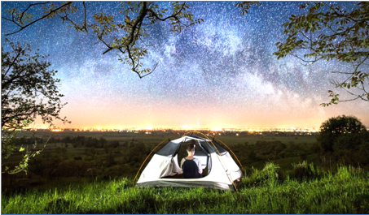
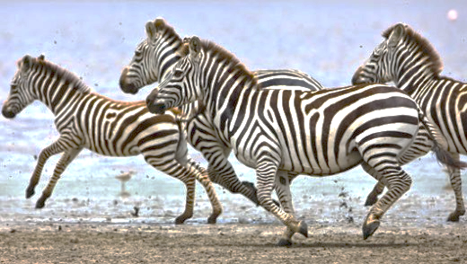
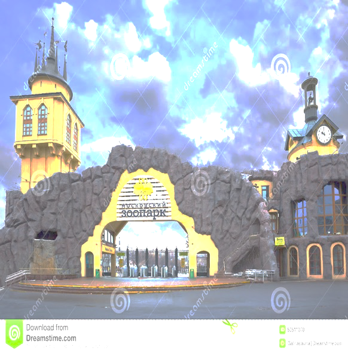
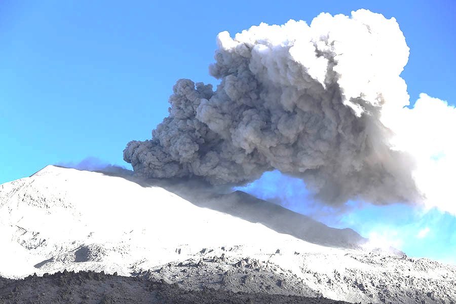
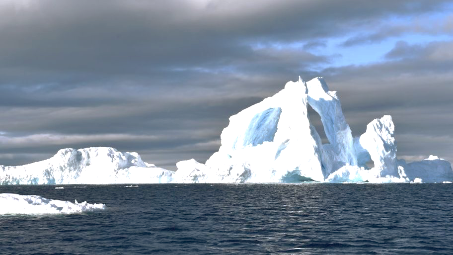
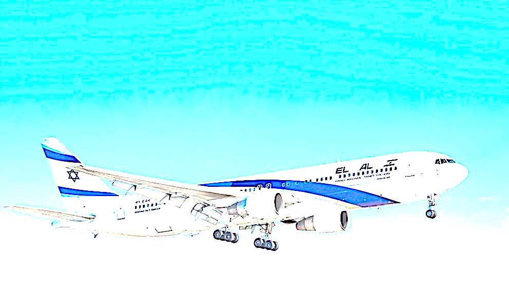

ON THE SEARCH.
“Mom! Can we go camping?” Said Trixie and her older brother – Jack. It is a Saturday. “Not today dear. But I promise to take you next week when your summer vacations are starting”. Next week Jack said “We will go for camping today.” You had promised! “Of Course, Dear! We are going for camping” said Mother. When they reached there. Trixie started setting the tent. Jack lit the campfire. Mother started cooking the food. Suddenly a panda appeared.

To everyone’s surprise he started talking. It said “My name is Hermister. I see that you are having a good time.” May I join you?” At first the children were very scared. They got surprised when their mother said “Of course. But there is a problem that there is no place in the tent. Hermister said “That’s ok. I will sleep outside. So, after dinner they went to sleep. At midnight Hermister woke up by some strange sound. Before he could take a step, 6 elephants and 12 zebras came running towards them.

The noise woke up Jack, Trixie and Mother too. The leader of the elephants whose name was Boom Boom said “You seem to be very good people.” You must live with us in the jungle for some time. Lizzie the zebra said “Yes, you must live with us. We will give you rides on our backs. Now the children were very excited. They looked at their Mother and as soon as she said yes, they got the zebras’ backs. But just when they did there was a big storm and all the zebras and elephants started running away from mother. Jack and Trixie did not know what to do so they just held on tight. After some time, the storm stopped and so did the zebras. But Jack and Trixie did not know where they were nor did the zebras. Meanwhile, mother was also very worried. She saw some zebra footprints on the dirt. So, she followed them. Jack and Trixie were also retracing their footprints. After sometime they bumped into each-other. They were very happy to see each-other but they still did not know where they were. Suddenly Jack said “We also forgot Hermister!” Where is Hermister? “It is fine’’ said Trixie. No! “We must find him, what if he needs us” said Jack and mother together. So, Boom Boom said “So it is settled then-we are going to find Hermister.” One of the zebras named Herbetninja said “You can ride on our backs” And all the other zebras shouted yes except Lizzie. She said “But we do not where to start. Immediately everyone fell silent until an elephant named Elfeet said “Let’s just follow the path until we find some clues. They started walking and riding. They kept on going until they reached the desert.
In the desert they found only one tree! They decided to rest under it for a while. After sometime everyone was asleep. After half-an-hour everyone was awake. Well everyone, except Herbetninja, who woke everyone with his snoring.
Lizzie woke Herbetninja up and scolded “You are sleeping soundly and woke us all up by snoring like a tractor” The next line was gales of laughter. They continued their search. Suddenly high winds blew and there was a sandstorm! SANDSTORM! Shouted Trixie.
Then everyone heard a voice.

It said “Tuslaach?” Jack understood that it meant help in Mongolian, so he shouted Tuslaach! Tuslaach! Suddenly, they could see two small figures coming towards them. The figures were two small kids! There was a boy named Makido and a girl named Waana.

The kids led them to their tent. Jack told everyone that they were in Mongolia. Mother told she new kids and their father that all the animals could talk and about their search on Hermister. The family agreed to help them. Everyone drank water and rested there for the night. The next morning, they loaded the supplies on the elephants, as Boom Boom said that they would be happy to carry them, so they started moving on. Soon they were in China. Lizzie said “How will we find Hermister here?” It is so crowded.

Elfeet said “Let’s just ask someone. So, mother asked a shopkeeper “Have you seen a talking panda come this way? The shopkeeper said “No” After a while they still could not find Hermister. They decided to move north. Soon they were in Russia. Makido said “I have heard that Russia is a big country. Waana said “Yeah. How will we ever find Hermister here?” Herbetninja said “Let’s look in the half of Russia.” Trixie said “But what if Hermister is in the other half?” Boom Boom said “Let’s split up into teams. If you can’t find Hermister, meet back at China. So, team no.1 was Lizzie and 7 other zebras, Elfeet, Jack, Trixie and mother and team no.2 was Boom Boom and 4 more elephants, Waana, Makido and their father, Herbetninja and 3 zebras. Team no.1 went west and team no.2 went east. They also decided to meet back in China if they could not find Hermister.


Team no.1 searched in the zoos, monuments and everywhere else a talking panda could be, but could not find Hermister. Team no.2 also searched high and low but still could not find Hermister. Soon they met back at China. They decided to search a different country.
They walked until they reached the Pacific Ocean. Waana said “How will we cross this huge ocean?” Makido said “We will have to build a boat!” So, they started building a boat. The elephants uprooted trees, the children chipped of tree bark to make oars, the zebras collected tree gum and the adults stitched leaves for the sail with the help of thin and sharp tree bark. They assembled the parts together and the boat was ready. They sailed across the Pacific Ocean with the elephants swimming beside the boat.

Touching the water Waana said “The water is cold!” After two days they reached South America. They walked until they reached Peru.

In Peru they took a step and a volcano blasted. Mother said “This place is too dangerous to stay in.” Jack said “But we have to find Hermister.” Waana and Makido’s father said “I have heard about a scientist who lives in Peru. Let’s go to him he will know what to do.” Lizzie said “So what are you waiting for?! Get on to our backs and let’s go! “With great difficulty they crossed the eruption of volcanos. After sometime they reached the scientist’s lab. The scientist’s name was Micheal. This time, Waana and Makido told all about their journey.

Micheal gave them special watches and 1 extra for Hermister. He said “These watches will take you anywhere you just have to name the place and you are there. But watches are very sensitive so I will give you these small boxes with mini cushions.’’ They set off to a place where not many volcanos blasted. After reaching there, scientist Micheal told them to always keep their watches in the boxes when not in use. After scientist Micheal left they started deciding where to go. Waana and Makido ‘s father said “Let’s go to Antarctica.’’ Mother said “Good idea.” So, everyone told their watches to go take them to Antarctica.

In a flash they were in Antarctica and it was softly snowing too. Jack and Trixie said “Look! We are in Antarctica and we are in appropriate clothes too.” They started the search in Antarctica. Lizzie and Elfeet teamed-up. Suddenly Lizzie and Elfeet heard a loud noise from behind an iceberg. They rushed behind it and saw a small door. They went through it and found themselves in a room of ice. They slowly made their way through it. As they were walking they heard strange bang again. The bang came from the corner of the room where there was another room. They opened the door and shouted “HERMISTER!” Lizzie said “Hermister! We are so happy to see you!” Elfeet said “Now let’s go and tell everyone that we found Hermister.” So, they rushed out of the iceberg and told everyone that they found Hermister. Everyone gathered around Hermister. Suddenly, Herbetninja slipped and pushed everyone! They all went slipping and sliding all over the place. Unfortunately, all their watches broke. Then Elfeet said “Look! My watch is working” Herbetninja suggested “Let Elfeet go and get the boat. Till then Hermister can tell us his story.” Everyone agreed and Elfeet disappeared. Hermister begun – “When the storm started, I ran deep into the forest. In the forest I found a big circle and I jumped into the circle. And I found myself with some hunters.

They took me up a mountain and up to the cliff. I was half conscious. When I regained consciousness, I was taken past some ocean which I guess was the Pacific Ocean. When we reached land, we went southwards. We again reached an ocean. This time I became sea-sick. When we stopped sailing we were at Antarctica and they left me inside the iceberg in which Lizzie and Elfeet found me. Suddenly there was a quarrel about whose fault was it to leave Hermister alone but it fell silent because of a loud sound from the ocean. It was Elfeet and he had got the boat with him. They started sailing and the elephants swimming beside the boat. Soon they were in Argentina.

All the humans took a flight to their homes.
their homes. Elfeet disappeared. In the other five elephants there was a silly one. He stepped on the boat and it broke. Now the zebras and Hermister had to somehow manage to ride on the elephants’ backs. When they reached the forest they never forgot the humans who helped them find Hermister. As for Hermister, he was very grateful.


Jack, Trixie and Mother had taken a taxi to their house. When they reached home so did their father. He had just returned from New Zealand. They were very happy to see each other. They all sat around the fire place and enjoyed a cup of hot chocolate as they narrated their trips.
THE END